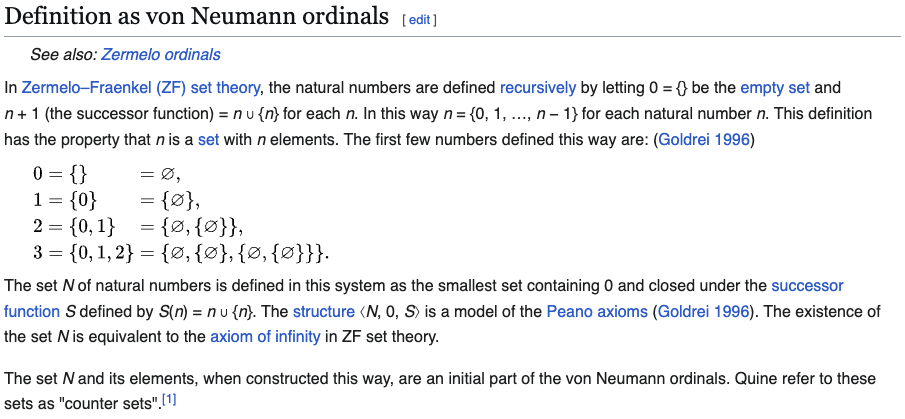
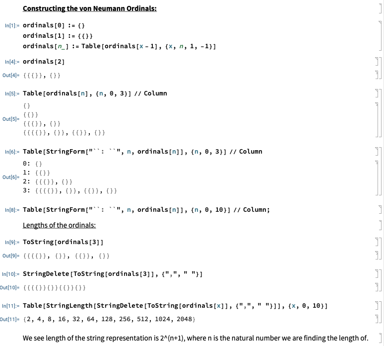
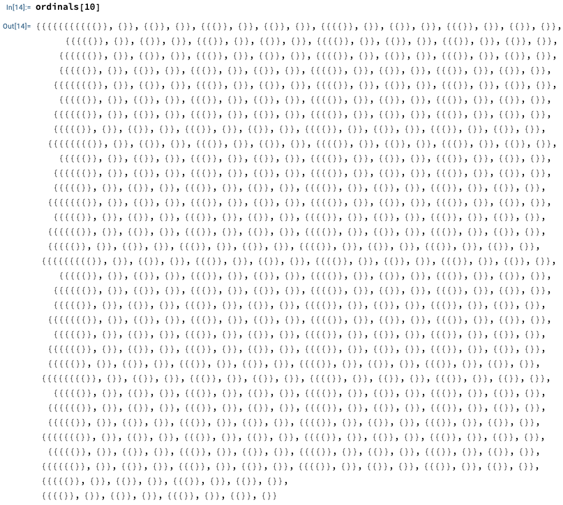

Visualizer for the Von Neumann Ordinals
Arihant Gadgade
Date Published: 11/11/2024
Motivation
From Wikipedia:
However, we know the empty set, ∅, can be represented as {}, so I wanted to see what the ordinals looked like completely as braces.
Code and Visualization
Mathematica code to construct the Von Neumann Ordinals:
So now let's see what the natural number 10 looks like:

Ok, we see that is huge!
We know from before that this is 2048 braces.
Luckily we use Hindu-Arabic numerals, because that would be completely unreadable.